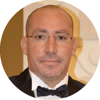

JURY
Le jury est une instance souveraine qui ne doit comporter aucun conflit d’intérêt, ni être soumis à une quelconque influence. 
- • Le jury a pour mission de sélectionner les finalistes et de désigner les lauréats selon les critères de sélection définis à l’article.
- • Le jury examine les œuvres et les travaux des candidats de manière anonyme en se fondant exclusivement sur les critères indiqués dans le règlement du concours. L’anonymat est de mise jusqu’à la proclamation finale des résultats.
- • Chaque membre du jury notera les idées de projets individuellement, sans concertation avec les autres membres du jury, par la suite une sélection se fera par le jury final des 3 meilleures idées de projets par catégorie et d’autres 3 meilleurs toutes catégories confondues.
Le jury a été sélectionné en réponse à 5 critères :
1. Expertise solide dans leurs domaines de compétences.
2. Notoriété
3. Crédibilité
4. Expérience internationale
5. Approche entrepreneuriale dans l’exercice de leurs activités.
COMITE SCIENTIFIQUE
Le comité scientifique examine toutes les candidatures reçues et les filtre,
rejetant celles non conformes et validant celles qui répondent aux exigences du
concours, le jury intervient à l’étape suivante pour notation et évaluation.
M. YOUSSEF JAJILI
- Journaliste / Ecrivain
- Expert en Communication
- Expérience dans les Médias

M. HASSAN LAHLOU
- Consul honoraire de la république de croitie à casablanca.
M. NABIL JEBBARI
- Entrepreneur Culture
- Maîtrise de la ville de Casablanca
MEMBRES DU JURY
NOUR-EDDINE LAKHMARI
- • Cinéaste, réalisateur et Producteur
- • Norvégo-marocain résidant à Casablanca
- • Expérience Audiovisuelle importante
- • Connu pour ses films réalisés à Casablanca

Dr. KARIM ADYEL
- • Avocat
- • Docteur d’Etat en Droit international
- • Arbitre au Tribunal Arbitral du Sport (TAS)

MOHAMED DERHEM
- • ARTISTE
- • Notoriété et Crédibilité
- • Connaissance de Casablanca et son Patrimoine Oral et Culturel
- • Entrepreneur
HICHAM LAHLOU
- • DESIGNER • Pluridisciplinaire
- • Célèbre et crédible • Expérience internationale et entrepreneur

SAAD ABID
- • Social entrepreneur
- • Grande notoriété et crédibilité dans les questions environnementales
- • Présence forte sur le digital

NEZHA BELKADY
- • Entrepreneure Culturelle
- • CO-FONDATRICE DE STUDIO DES ARTS VIVANTS
MOUNA HACHIM
- • Auteure et Ecrivaine
- • Grande culture et riche production éditoriale
- • Crédibilité • Patrimoine

MOHAMED OUDAHA
- • Créatif / Publicitaire
- • Lauréat du lion d’or du Festival de CANNES
- • Le créatif Marocain le plus primé dans le monde
MOHAMED JALL
- • Architect et designer de l’opéra du sultanat Oman
- • Pluridisciplinaire
- • Expérience internationale
Brahim El Mazned
- • Entrepreneur Culturel
- • Fondateur de Visa For Music
- • Directeur du Festival Timitar
- • Expert auprès de l’UNESCO

AZIZ DADANE
- • Chef d’entreprise • Acteur Socio-Culturel
- • Crédibilité • Grande Culture
- • Expert en nouvelle technologies
HIND LAIDI
- • Fondatrice et Présidente De l’association JOUD
- • Associatif • Crédibilité
- • Experience internationale
Yassine Gamal
- • Membre du mouvement OTED, initiative dédiée au développement et l’innovation territoriale
- • Expert international en Developpement de Marché et en Management de l’innovation